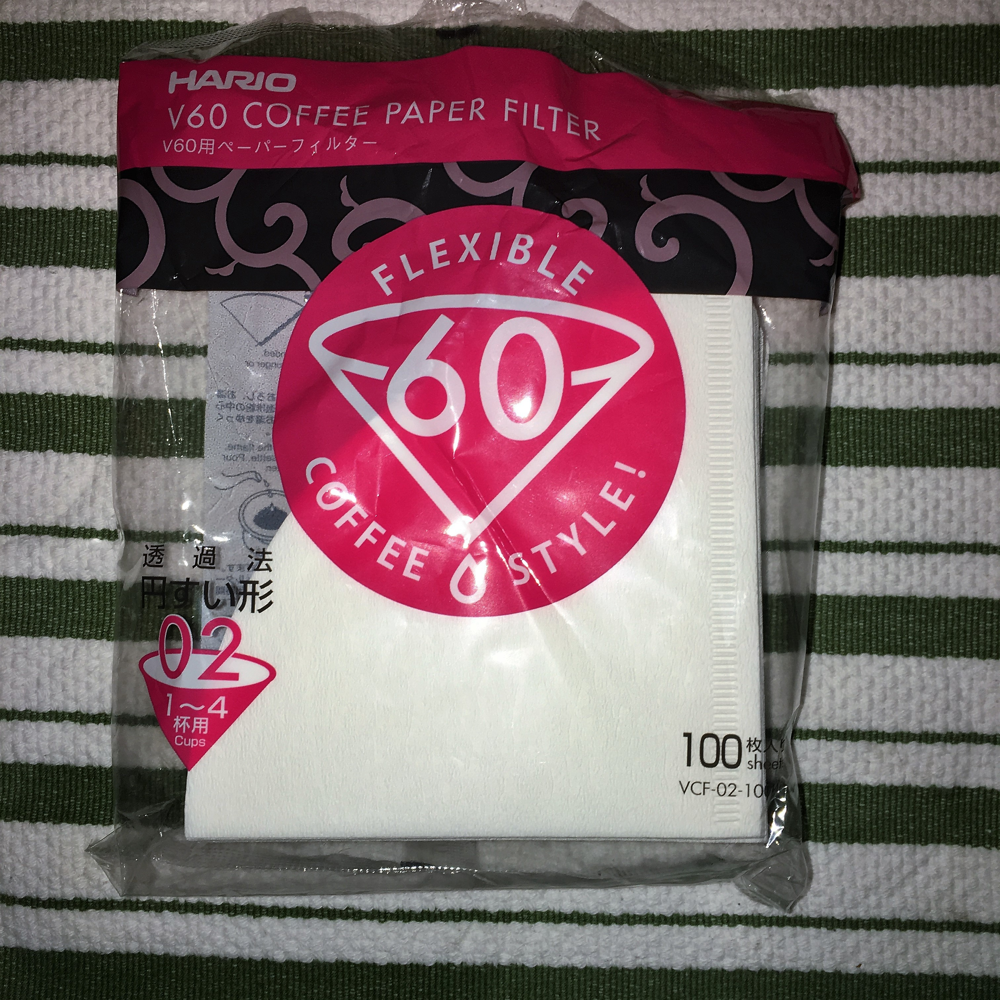
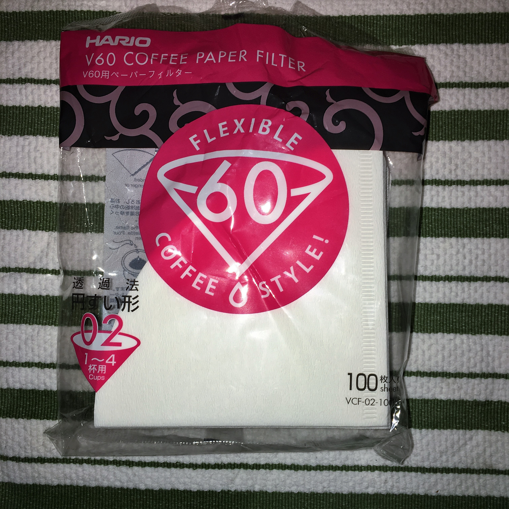
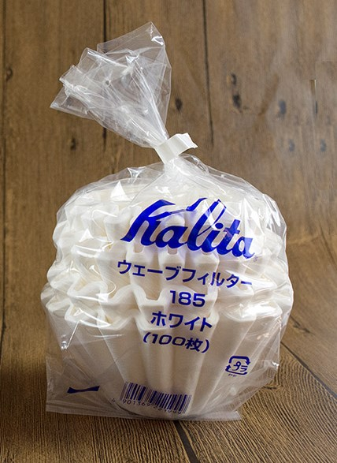
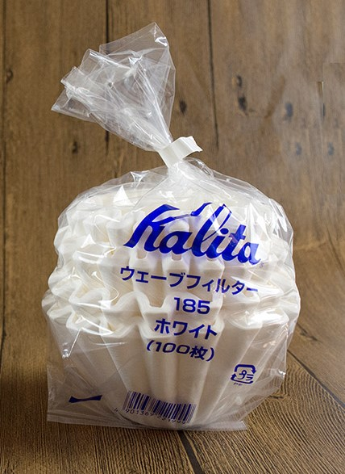
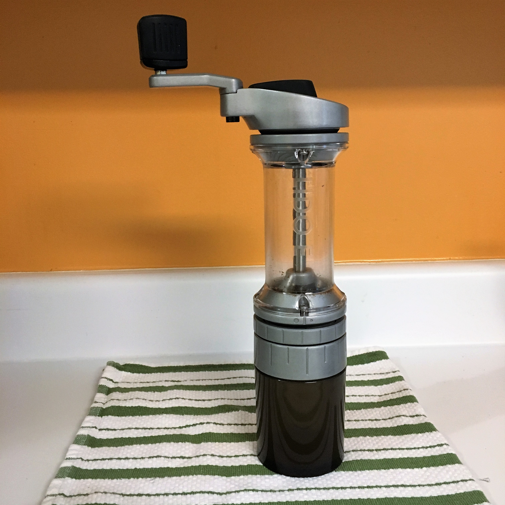

{archive}
currently brewing: oddly correct - ethiopia, jigesa natural
{archive}
8-cup chemex with square bleached filters

red plastic hario v60 02 with white tabbed filters and glass carafe
 

kalita wave 185 with white kalita japanese filters
 

aeropress with paper filters

secura 1L stainless steel french press

orphan espresso lido e-t
all measurements taken from marked zero
true zero located at 0-4

bonavita 1L electric variable temperature kettle
generic walmart kitchen scale with 1g precision